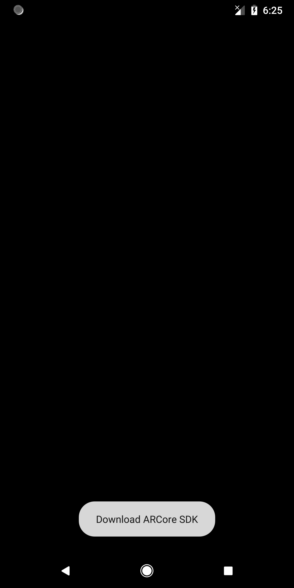
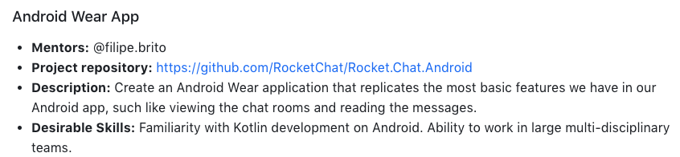
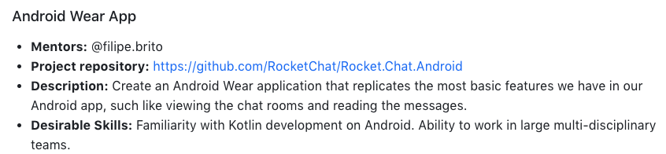

Contributions Week-II
Hello World.!
This is my weekly report 2 on the AR Library for Processing-Android which is a Library that will help creating Augmented Reality applications in Processing through Android Mode.
On continuation to the first week contribution, there where a couple of bugs to be fixed in order to build the project under AR Library. Bugs : While switching between modes created a null pointer expception which was fixed and issues such as version code mismatch where fixed. Over all at the end of the day, the project successfully builds and runs on the Physical device while in AR mode through ADB.

Later, As it builds successfully an example was created (it doesn't contain any renderers yet) under AR Library and it was made sure that it is listed under the AR directory of the in-build libraries and also tested if it works as expected.
Once we had this up and running, we went on with implementing certain AR functionalities .i.e., first of all it should be made sure that if the device in which the sketch is running supports ARCore, only if the device supports ARCore the Renderer must be initialised else a prompt is shown to the user saying the status as device not supported.

Once as the Device is found supporting ARCore the necessary permissions (in this case the camera permission) has to be given during the first lauch of the sketch. The permission is directly granted if allow is clicked else the sketch properties is openned up to grant permission if Don't ask again option is checked.
Renderers:
Unlike the VR Library which extends from GVR Activity, the AR library use it's own GLSurfaceView which acts as the common view over which rendering is done. The VR Renderer is implemented in two ways .i.e., MONO and STEREO where as the AR consists of a Renderer that consists of a number of sub-renderers to make it work as expected, which includes:
- Background Renderer
- Plane Renderer
- Point-cloud Renderer
- Object Renderer
The Main Renderer is named AR similar to MONO or STEREO done on VR.
Before actually implementing the renderer in the library, I though of having a test app that performs the Rendering as expected on each stages. The repo - Renderer Tests will have 4 braches (currently has 2 - first two renderers implemented) that will contain the corresponding 4 sub-renderers.
Github Link : https://github.com/SyamSundarKirubakaran/RendererTests
The background Renderer on implementation should produce the real-time camera image in Blocking mode as output. But weird enough, it produces a solid color instread of the camera image, yet it is important to note that the tint of the color is relational to the scene that the camera is pointing at .i.e., on pointing at a brown suface produces a brown tint, and on placing it on the table produces a black tint. I will work on fixing this to obtain the real-time camera image once this is made to work as expected, the Library shall have the desired and functional background Renderer.
The Object Renderer which is the last part of implemetation makes similarities with P3D which is used to renderer 3D objects, this could be taken advantage during the implementation of object renderer - but I'm not sure if P3D can be nested inside AR Renderer(just a raw thought) because P3D is itself a stand-alone Renderer. Testing P3D Renderer under AR Library (without using AR Renderer):
 On looking into their project requirements.

On looking into their project requirements.
